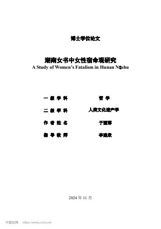

用户提供论文
湖南女书中女性宿命观研究
结合女书文本与田野调查，从梦境、占卜、许愿还愿、婚姻书写及观念结构等角度，分析女性宿命观的形成与运行。
论文阅读与下载
用户提供论文 · 共 241 个 PDF 文件页。下方范围为 PDF 文件页码，含封面、摘要等，与正文印刷页码不同。

先读摘要，再打开全文
结合女书文本与田野调查，从梦境、占卜、许愿还愿、婚姻书写及观念结构等角度，分析女性宿命观的形成与运行。
全文索引覆盖 241 / 241 页的可提取文字；扫描图和图表文字可能无法检索。
文件较大时请使用 Wi-Fi。微信等内置浏览器若无法预览，可用系统浏览器打开或下载；下方显示各文件大小。
阅读和下载使用同一份原始 PDF 文件。
- 完整论文PDF 文件页码 1–241 · 15.8 MB
PDF 在新标签页打开；浏览器不支持预览时可下载后阅读。
引用信息
于丽那. 湖南女书中女性宿命观研究[D]. 中南大学, 2024.
文件出处与校验信息
原文件名：湖南女书中女性宿命观研究_于丽那(1).pdf
完整原件 SHA-256：29cbef726ad32e6259123c4a0093f5df5b818ce11c1afe61f949d90801676303
paper-fatalism.pdf
SHA-256：29cbef726ad32e6259123c4a0093f5df5b818ce11c1afe61f949d90801676303
材料与方法
论文以女书文本和田野调查为基础，结合多学科方法讨论女性宿命观。婚姻是作者比较婚前、婚后女书书写特征的一条线索。
研究线索
作者讨论梦境、占卜和许愿还愿等宿命预示形式，分析宗教、民俗、生存处境和情感归属等因素，并从伦理观、生死观与幸福观理解其观念结构。
阅读提示
这里的“宿命观”是论文的研究概念。应结合作者的材料范围及论证阅读，不将其概括为所有女书使用者或所有女性的共同立场。可与歌堂空间、身份认同研究相互参照。